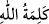
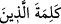

“Allah ona sekînetini indirdi.” Sekîne, kalplere sükûnet veren güven duygusu
demektir. Kâşifî: “Huzur veren rahmetini indirdi” diye yorumlar.
Allah’ın sekînetini indirdiği kişi Rasûlullah’tır. Bu durumda “sekînet”ten maksat,
etrafında asla korku şâibesinin dolaşmadığı güven duygusu demektir. Ya da arkadaşı Hz.
Ebû Bekir’dir ki bu daha zâhirdir. Çünkü endişelenen o idi. Rasûlullah ise sâkin ve her
hâlinde huzurlu idi. Bu duruma Şeyh Ferîdüddîn Attâr (k.s.) şöyle işâret eder:
Onun ilk dostu olan o ilk hâce
İkisi mağarada iken o iki kişiden biri idi
Hak’tan onlara sükûnet ulaşınca
Dünya sıkıntıları onun için ortadan kalktı
Müfti Sa’dî Çelebî Havâşî’sinde der ki: Bilakis daha uygun olan ve makama münâsib
olan birincisi (yani sekînetin Rasûlullah’a indirilmesi)dir. Sekînetin indirilmesi, bir
endişenin ortadan kaldırılması için olmasını gerektirmez. Bilakis bazan Huneyn
kıssasında geçtiği gibi doğabilecek bir endişeyi def’etmek için de olur.
Hafsa’nın (r.anhâ) mushafında âyet “” yâni “Allah o ikisine
sekînetini indirdi.” şeklindedir.
“Ve onu” Hz. Peygamber (a.s.)’ı “sizin görmediğiniz askerlerle destekledi.” takviye
etti. Görünmeyen askerler, Bedir, Ahzâb ve Huneyn savaşlarında düşmana karşı Hz.
Peygamber (s.a.)’e yardım etmek üzere inen meleklerdir. Âyetteki bu cümle daha önce
geçen “Allah ona yardım etmişti.” cümlesine atfedilmiştir.
“İnanmayanların sözünü alçalttı.” Allah şirki -veya onların küfre davetini- kıyamete
kadar ebedî olarak makhûr ve mağlûb kıldı.
“Üstün olan, yalnız Allah’ın sözüdür.” Allah, sözünün yüceliğini Rasûlü’nü
kâfirlerin arasından çekip almak sûretiyle gerçekleştirmiştir. Allah’ın sözünden maksat
tevhid veya İslâm’a dâvettir.
Ayetteki “” zamiri, fasl zamiri olup Allah’ın kelimesinden başkasının da bazan
üstün gelebileceği tevehhümünü bertaraf etmek üzere gelmiştir.
Kırâat imamlarından Ya‘kûb “” ifâdesini, daha önce geçen “”
ifâdesine atfederek “” şeklinde nasb ile okumuştur. Fakat bu, zayıftır. Çünkü,
Allah’ın sözünün önceleri alçak olduğu, daha sonra üstün hale geldiği mânâsını
çağrıştırır. Halbuki durum böyle değildir. Aksine Allah’ın sözü ebedî olarak bizâtihî
yücedir.
Münâzarâtü’l-Mekkî’de denilmiştir ki:
Bir kişi, kasden “” şeklinde okuyup kesse ve “ ” şeklinde okuyup devamını getirmese kâfir olur. (Çünkü bu durumda
” şeklinde okuyup devamını getirmese kâfir olur. (Çünkü bu durumda
mânâ şu şekilde olur: Allah inanmayanların sözünü alçalttı, Allah’ın sözünü de).